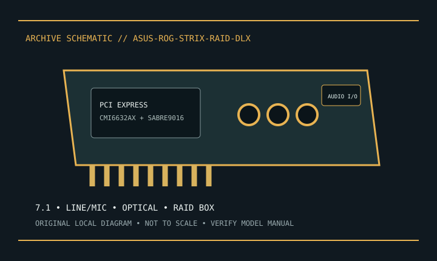

[ INDIVIDUAL MODEL // SOUND HARDWARE ]
ASUS ROG Strix Raid DLX
PCIe 7.1-channel card with SABRE9016K2M DAC and external Raid Mode control box; not the Strix Soar.

Model-specific specifications
| Exact model / identity | PCIe 7.1-channel card with SABRE9016K2M DAC and external Raid Mode control box; not the Strix Soar. |
|---|---|
| Audio processor / codec / DAC | C-Media CMI6632AX processor, ESS SABRE9016K2M DAC and Cirrus Logic CS5381 ADC listed in ASUS model specifications. |
| Channels / resolution / sample rate | 7.1-channel analog playback; ASUS lists analog conversion up to 24-bit/192 kHz. Digital output and driver modes have separate limits. |
| Analog and digital ports | Five 3.5 mm multichannel/headphone jacks, line/mic input and optical S/PDIF output; bundled Raid Mode control box provides desktop controls. |
| Slot / host interface | PCI Express x1 add-in card. |
| Operating-system support | ASUS lists Windows 7, 8.1 and 10 (32/64-bit) for model software. Check the exact driver package; no current-OS guarantee. |
Compatibility & preservation
Control box/cable are part of the DLX setup. Driver/software support is archived and should be confirmed before host installation.
- Photograph the card label, board revision, bracket connections and included accessories before service.
- Retain the exact driver, firmware and operating-system version known to work with this model.
- Confirm slot fit, connector pinout, breakout hardware, channel mode and supported sample rate before integration.
Manufacturer sources
- ASUS Strix Raid DLX — official technical specificationsManufacturer product, technical specification, or model manual source.
- ASUS Strix Raid DLX — official manual and support downloadsManufacturer product, technical specification, or model manual source.